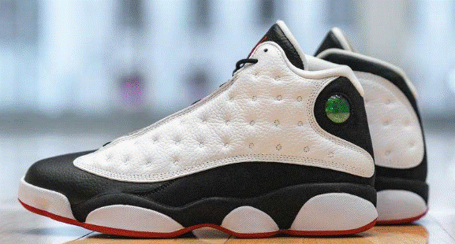

|  | 乔丹13代，LastDance”，这是1997-98赛季前公牛队集训时，“禅师”菲尔・杰克逊派发到每个队员手中的球员手册上的标题。鞋子设计中，和猎豹元素最相似的是鞋底。整个鞋底被设计成类似动物爪子的风格。鞋上方的全息图是AJ13的另一个显著特点，根据观看角度不同，23号或者飞人标志会轮流闪现。有几款比如像海蓝/北卡蓝/灰/白配色的AJ13，球鞋上方还加进了3M材料，使得整个球鞋的外观有了明显提升。1998-99赛季，5种配色的中帮AJ13面世。起初的白/黑/赤红/珍珠灰配色或者白/赤红/黑配色是乔丹在芝加哥联合中心主场选择的装备。而黑/赤红配色款则是乔丹根据联盟的规定在客场选择的球鞋。为了纪念其母校北卡罗莱纳大学，海蓝/北卡蓝/灰/白配色的款式获得了相当良好的市场反应。而1998年季赛期间，最后一款黑/校园红配色的AJ13发布。这款鞋的热度再次证明了乔丹就是最好的广告，很难有一个品牌的宣传效果能做到像Jordan品牌这样出色; |